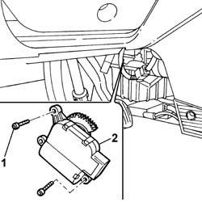
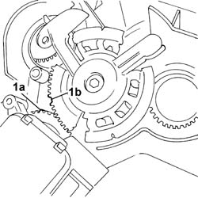

5040D76 air contitioner distribution flap control motor - r r
- Path
- Procedures > 50 AUXILIARY UNITS > 5040 AIR CONDITIONING CASING AND COMPONENTS > 5040D air conditioner controls > 5040D76 air contitioner distribution flap control motor - r r
- Kind
- repair procedure (removal / refitting; the operation number is the code)
- Applies to
- all engines; all production periods
- Interactive page
- https://sloeber94.github.io/elrnDB-fPnd/en/#/2752905
Applies to: all engines; all production periods
 Removing
Removing
 Refitting
RefittingDisconnect the battery negative terminal.
Disconnect the electrical connection.
 | Name | Connector |
|---|---|---|
- | Air distribution flap actuator | N80 |
1. Undo the retaining bolts.
2. Remove the air conditioner air distribution flap motor.

Applies to: all engines; all production periods
Refitting
Removing1. Fit the air conditioner air distribution flap motor, checking that the references on the motor sprocket (1a and the distribution flaps sprocket (1b are correctly positioned.

Applies to: all engines; all production periods
Tighten the fixing bolts.
Connect the electrical connection.
| Name | Connector |
|---|---|---|
- | Air distribution flap actuator | N80 |
Connect the battery negative terminal.